Table of contents
Image Capture and Post-production Editing Workflows for PARADISEC Archive
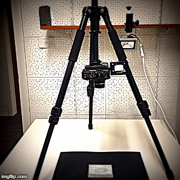
Last updated: 5 July 2021
This page outlines PARADISEC’s approach to digitising text materials. The majority of our fieldnotes, papers, and notebook digitisation is done with high resolution photography, not scanning. Here are some reasons why we choose to use photography rather than scanning:
- the process is much faster
- items that are very fragile or have different shapes are easily accomodated with less handling
- this method will capture very high quality images with correct colour representation
- the equipment is portable and can easily be set up in most environments, including remote field locations with tricky power options
- depending on your equipment choices, this can be the least expensive option, yet will still retain high quality output
Target format of images to be archived in PARADISEC
Before discussing the details of equipment we use in this workflow, here are the target file formats for image capture and archiving and the quality standards we request. Adhering to these high standards may be difficult in some situations; please try to aim for these as best you can.
| Capture file format | Archival copy | Access copy | |
|---|---|---|---|
| File type | .CR2 (RAW) | .tif | .jpg |
| DPI | 72 | 400 | 300 |
| Bits/Channel | 16 bit | 8 bit | 8 bit |
| Colour mode | RGB (Adobe RGB (1998) | RGB | RGB |
Note: The above 72 DPI (dots per inch) figure for the raw image is not very revealing as to the image quality compared to the 400 or 300 DPI figures. Image quality actually has more to do with pixel dimension. If you wish to read up on why DPI can be a tricky standard, take a look at this article: The myth of DPI. There will be more about target image sizes (pixel dimension) below in the section on workflow and remote capture settings.
In the end, we would only need the .tif version from you for the archive. Our system automatically creates the access .jpg. If you are archiving images of notes or a field journal, it is a good idea to also provide a single .pdf of the images digitally bound together. For this, you should use compressed .jpgs rather than .tifs, which will keep the size of the .pdf manageable.
Equipment used in this guide
| Equipment | Description and links to more details |
|---|---|
| Cameras | Canon Powershot G12 (compact digital camera) and Canon EOS 700D (DSLR) |
| Photo stand | Kaiser Reprokid |
| Tripod with Reversable centre post | Velbon Sherpa 803R Pro Tripod |
| Shelf clamp | Velbon Clamp Kit II |
| Software for remote capture | EOS Utility (for compatible Canon cameras) |
| Software for post-production editing | Adobe Bridge |
NOTE: The above information and the workflow included on this page are provided as suggestions based on PARADISEC-specific workflows; feel free to choose your own hardware and software.
Cameras
Canon PowerShot G12
This Canon camera was purchased in 2010 and it is still fully functional in 2021. It is a compact digital camera, not a DSLR. The PowerShot allows you to capture RAW images without JPEG compression, as well as JPEGs, or both simultaneously. This model does not allow for tethering without some hacking of the firmware. I have not done this hack; See below for a simple workflow for image capture without tethering your camera to a computer. The PowerShot G12 features an articulated LCD screen. This means you can rotate it so that your target image is visible from a seated position when the camera lens is pointed downwards on a desk or table in front of you.
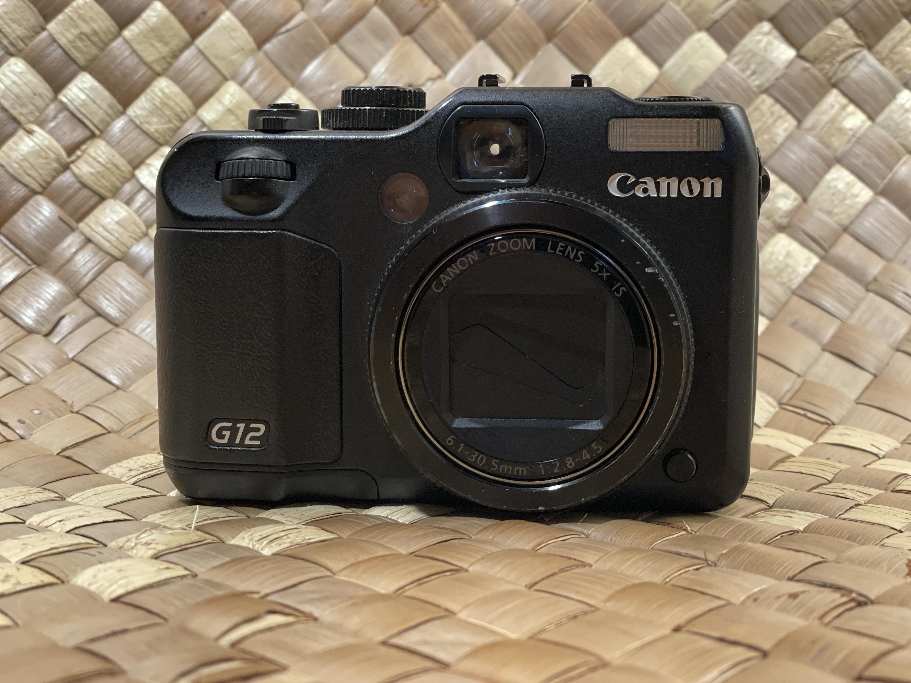
Canon EOS 700D
This DSLR does allow remote capture tethering. This opens up the possibility of attaching the camera to a computer to view, focus, and capture images and store them directly on your computer, with a predertermined file-naming pattern. But you can also use the same workflow as the non-tethering compact digital camera if you do not have a computer handy at the time of digitising. This model also features an articulated LCD monitor for comfortable image viewing. Another bonus with this camera is that you can do quick zoom adjustments by manually adjusting the lens, which you cannot do with the PowerShot.
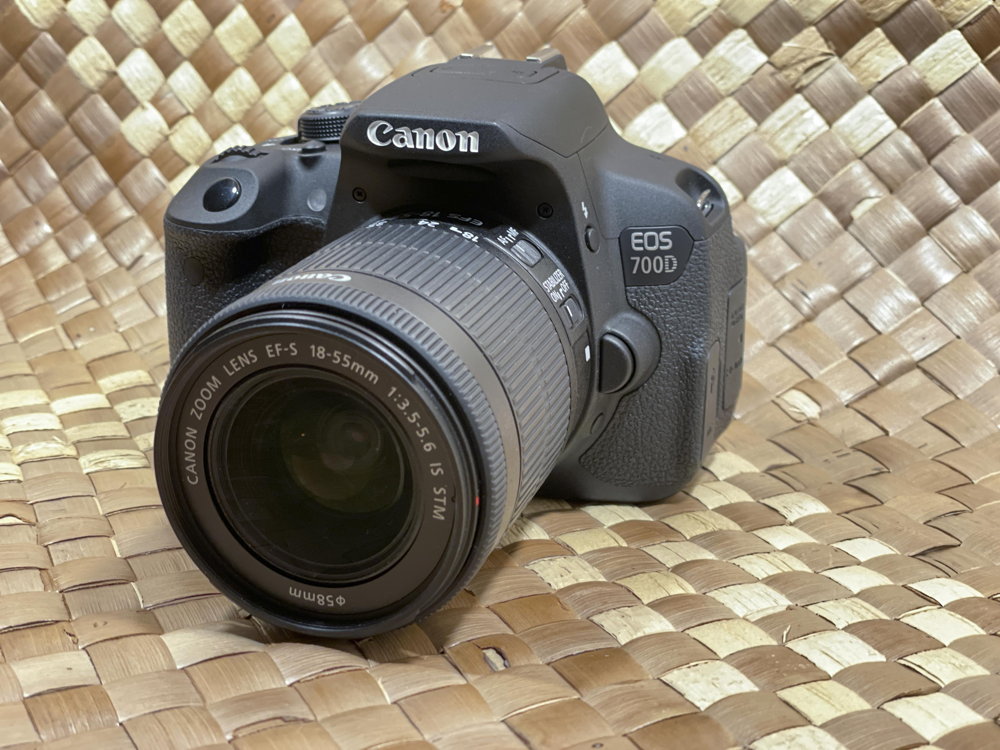
Tripods and photo stands
Velbon Sherpa 803R
This tripod was purchased about ten years ago, so it is unlikely that you would find the same model; however, the important features on this tripod are the following:
- reversable centre post (necessary for this workflow)
- relatively compact and lightweight
- spirit level (not necessary, but nice to have)
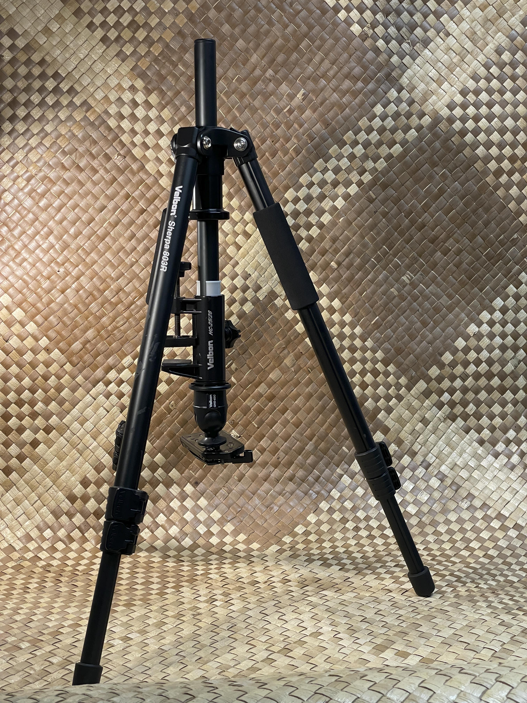
Setting up the tripod with reversable centre post
This is the least expensive and most versatile setup, especially if you need to photograph items in a remote location. The tricky part is getting the lighting right. Your light source (natural or artificial) could be blocked by the tripod legs and cast a shadow on your image. If your light source is in a fixed position, try moving the tripod around to minimise any shadows. You may also try to find lights that you can clip on to the legs of your tripod or onto nearby furniture. Just be mindful that too much direct, unfiltered lighting may wash out your image. If you can place the tripod next to a light coloured wall and then shine the lights onto the wall. The reflected light may be enough to provide evenly disrtributed indirecrt lighting.
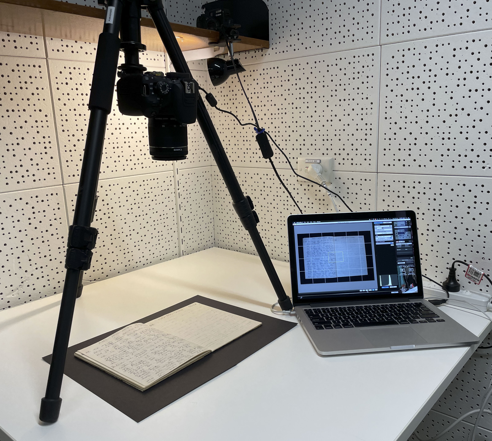
Velbon shelf clamp
The Velbon tripod mentioned above came with a shelf clamp, but you can purchase a clamp separately. If you do, make sure there is a tripod post that comes with the clamp if you do not already have a tripod with a removable centre post. The link in the table above directs you to a similar model to the shelf clamp that came with the Velbon Sherpa 803R.
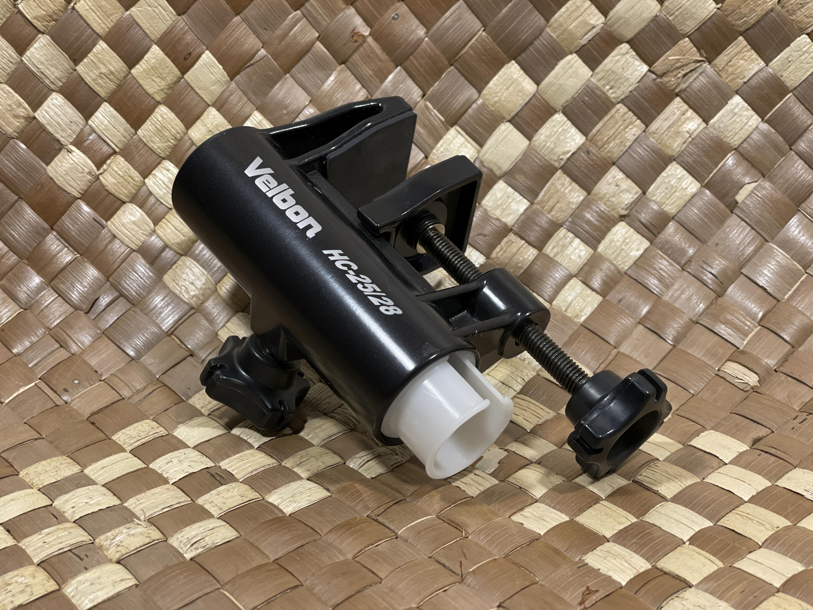
Setting up the shelf clamp
Using just the shelf clamp and the tripod’s centre post is by far the simplest combination, especially if there is any travel involved. The only drawback is that this requires a shelf that you can clamp to. However, if you are in a very remote location you could construct something with timber, bamboo, or even a smooth, sturdy branch. Just make sure it is strong and secure enough to hold your camera and allows you to create consistant images.
Below are two configurations with the shelf clamp. The image on the left is with the Canon EOS 700D tethered to a laptop for remote capture. The image on the right is the Canon PowerShot; images are being captured to the camera’s SD card.
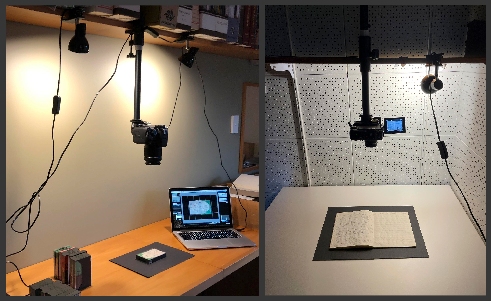
Kaiser Reprokid Photo Stand
The Reprokid model is a compact camera stand that can accommodate small, lightweight cameras. It works really well with either of the above Canon cameras. This photo stand came with the lighting set, so one does not need to figure out where to attach any lighting. The vertical post is ruled so you can retrieve the distance of the lens to the target, or just make note of the camera placement for quick set up the next time you shoot. The base is a hard plastic grey surface so I use black matte card stock under my items. You can place a ruler or a colour separation guide and grey scales patch on the base if you need this level of size or colour precision in your image capture.

Setting up the photo stand
Photo stands have many benefits for image capture. This particular model has the lighting attached, as noted above you don’t have to worry about where to clamp the lights. The light fixtures on this stand can move around, so if the light is too direct and overpowering, they can turn so that they are pointing away or toward the back wall. Be mindful of the cables from the lights; if you don’t tie them up and out of the way, they can show up in an image, or cast a shadow on your subject.
Having the camera attached to a stable, ruled post is great for keeping your set-up consistant from day to day. If you need to shift things around in your space, the entire set-up can be moved as is. Having a solid base on which to put your notebooks or documents is also a fine feature. The base on this model is a bit small. If you need to build up the base to create an expanded, level for larger notebooks to fit, perhaps place some books you may have nearby around the photostand’s base to create an enlarged, even platform. Or get a piece of plywood and clamp it to the photo stand base.
The downside to using a photo stand is the cost. Pricing for these can be expensive. The Reprokid is one of Kaiser’s less expensive models and it works very well for our purposes.
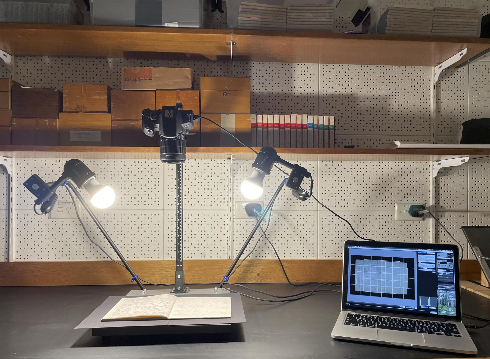
Software
EOS Utility
For remote capture: Use Canon’s EOS Utility with a compatible Canon camera
Remote capturing images directly to your computer can speed up your task of taking photos, especially if you set up a good workflow. There are many tethering tools available. I have chosen EOS Utility because it came with my Canon EOS 700D, it was free, and it serves our purpose. Here is an article from Tether Tools (2020) that discuss other tethering software that is currently on the market.
If you are planning to use a Canon camera that is compatible with the EOS Utility software, here are the links:
Note: The link to the PC version is for EOS Utility 3, which is not compatible with my EOS 700D camera; however, with this installation both EOS Utility 2 and EOS Utility 3 are installed. The version that I am using is 2.14.20.0.
Adobe Bridge
For image preview and processing, use Adobe Bridge
As you capture the images, it is important to check their quality before you get too far into your task. But even at the end of the day, when if you have collected hundreds of photos, you may realise that they would be better cropped, or that the lighting was too warm and you would like to cool down the colours, you can use Adobe Bridge to do this as a batch process. Adobe Bridge is available for free. You do not need to pay for it, but you do need to sign up with Adobe. Navigate to the Adobe Bridge download page.
Workflow for remote capture
(This is specifically designed for ANU-PARADISEC workflows, but the concepts are easy enough to personalise for your own purposes)
- Start the computer and use your ANU UniID to log on
- Take the Canon 700D battery pack from the charger and insert into the camera.
-
Once the computer is fully booted, turn the camera on. This will also open the EOS Utility software installed on the computer.
Note: Make sure the AF/MF (Auto Focus, Manual Focus) setting on the lens of the camera is set to AF and that the camera mode on the top of the camera is set to TV
-
Select “camera setting/remote shooting” from the start screen.
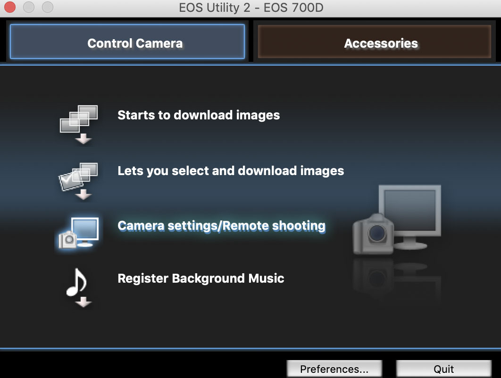
A window with the camera settings will pop up on the right side of the screen.
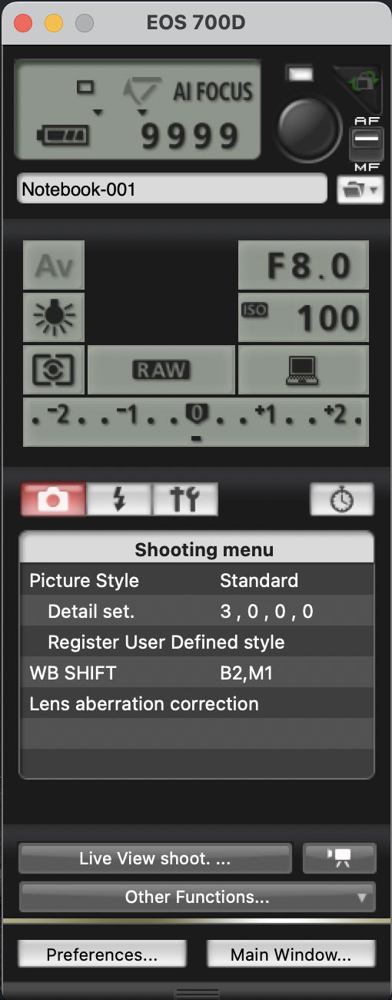
- Click on “Live View shoot…” as seen in the remote window above. This will open the window showing the full live view of what the camera is capturing.
- Click on the folder icon (found toward the top of the remote, under the AF/MF switch) to select a destination folder. For collected items (folder, notebook, manuscript, etc.), create a new folder for each item. You will be saving these images directly to the folder you designate- not to the SD card in the camera.
- To set up the file-naming for the images:
- Click on the folder icon and select “File Names” in the preference window
- Click “Customize…” to customize the name. Create file names that start with a collection ID, followed by a hyphen, then the item number (what you have come up with as an ID for your notebook/folder/manuscript), and then select sequential numbering of the images, e.g. DT1-04-
, Close the window. - In the menu window, set “Number of Digits” to 3, This will accommodate items with 999 pages. If there are under one hundred pages, use 2 digits. If over a thousand pages, use 4 digits. This will help with the ordering in PARADISEC collections and is just good practice.
- Set “Start” to 1 at when you begin photographing each new item (otherwise it will just continue counting from whatever was shot in the previous session)
-
Fix the position of the item using the Live View window. Use the black card stock paper provided as a background and to cover the page that is not the target page. Switch on the attached lamps on the stand.
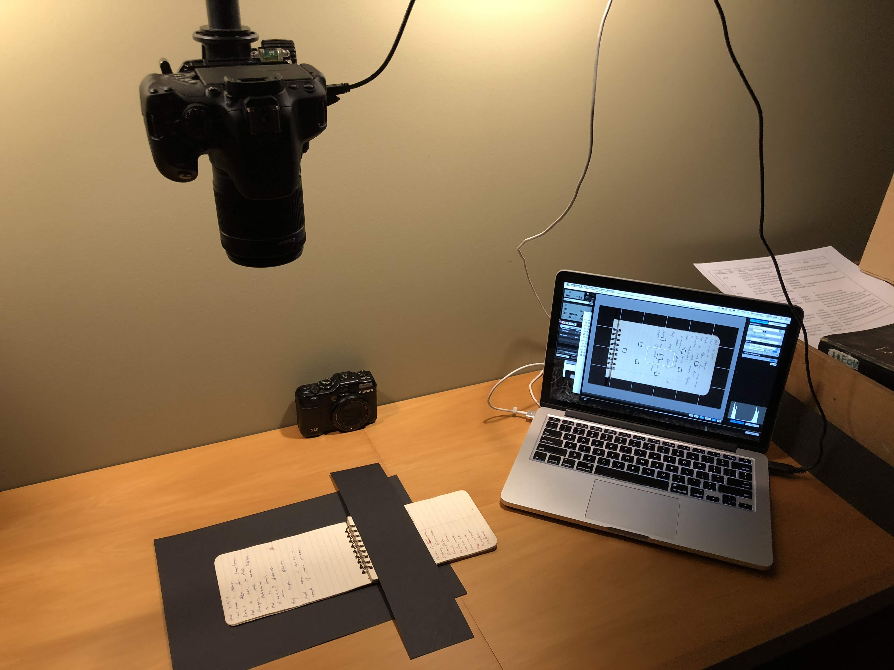
-
Set lighting by double-clicking on the relevant icon in the settings window. The lamp symbol (indicating tungsten lighting) is the best light setting for our studio.
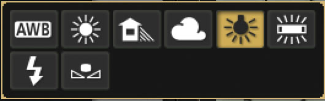
The shutter speed should be 1/125 and the ISO should be 200 for our studio lighting.
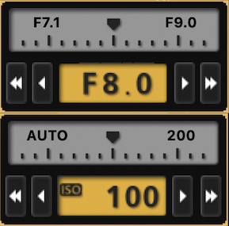
If necessary, make finer adjustments to the exposure level (adjusts image lightness/darkness) by moving this digital slider either toward -1 or +1.
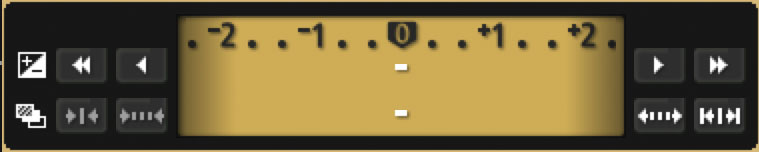
-
When the live view window shows what you would like to capture, either click on the round, black button in the top right corner in the remote window, or the small black button in the lower left side of the live view window, or press the space bar. Repeat this step for each page of your item. If you are capturing more than one item/notebook, then restart your workflow from step 6. Do not forget to reset your image naming and counting.
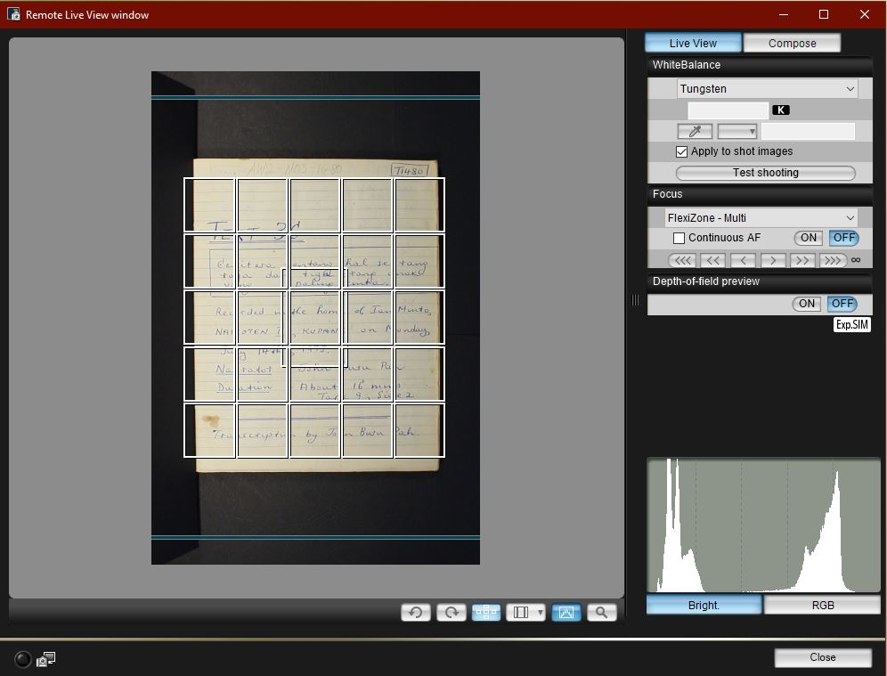
- When finishing a session for the day, wait until the last image has loaded and then switch the camera off.
- Remove the battery and put into the charger to charge for the next session.
Post-production processing of images
The following instructions are based on Adobe Bridge CC 2021. Many of the functions are similar to the previous versions, with slight adjustments to the interface and workspaces.
Note: If you are affiliated with ANU, our workstation allows you to access this program using your university login. Otherwise, you can learn more about accessing Bridge for free here: Adobe Bridge
You will be making small batch adjustments to the colour or lighting if necessary; this will be best if you restrict your editing to one notebook at a time as the colour of the paper may differ from notebook to notebook. Also, if you had to reshoot a page, or you accidentally shot a page twice, you will need to delete an image and rename your files.
Once you have finished creating images, open Adobe Bridge and navigate to the folder containing your notebook images within Bridge. Highlight the images you want to edit, then go up to the top menu and select the camera lens icon; this will open the Camera Raw function within Bridge, where we will make our edits and create tifs.
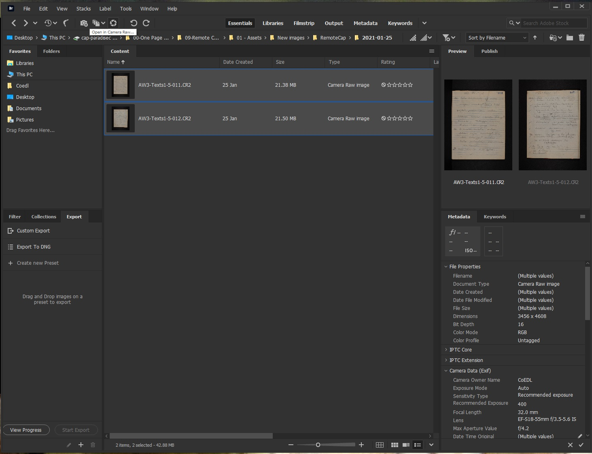
Once in the Camera Raw window, all the editing functions are in the right panel. Image below presents the colour and lighting editing options. You can edit a single image, or multiple images at once:
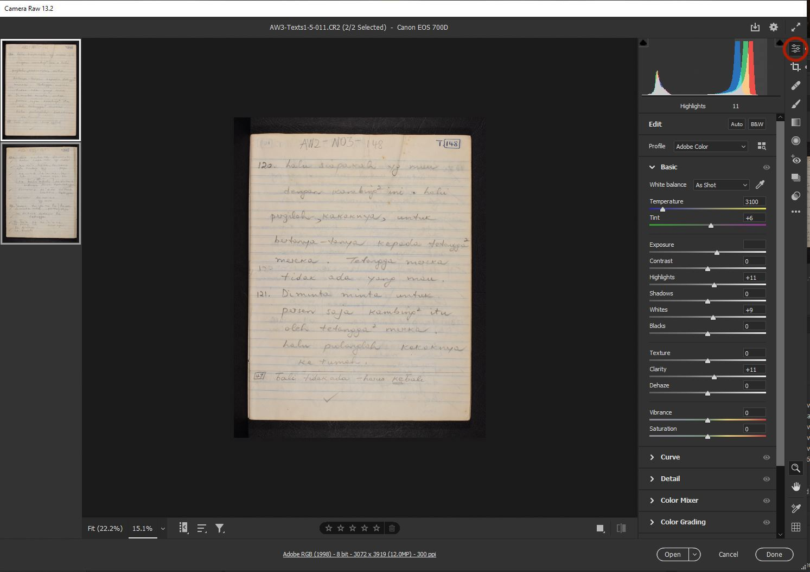
And in this image you can see the size and image orientation options, including cropping. Again, this can be done for a single image, or multiple images at once:
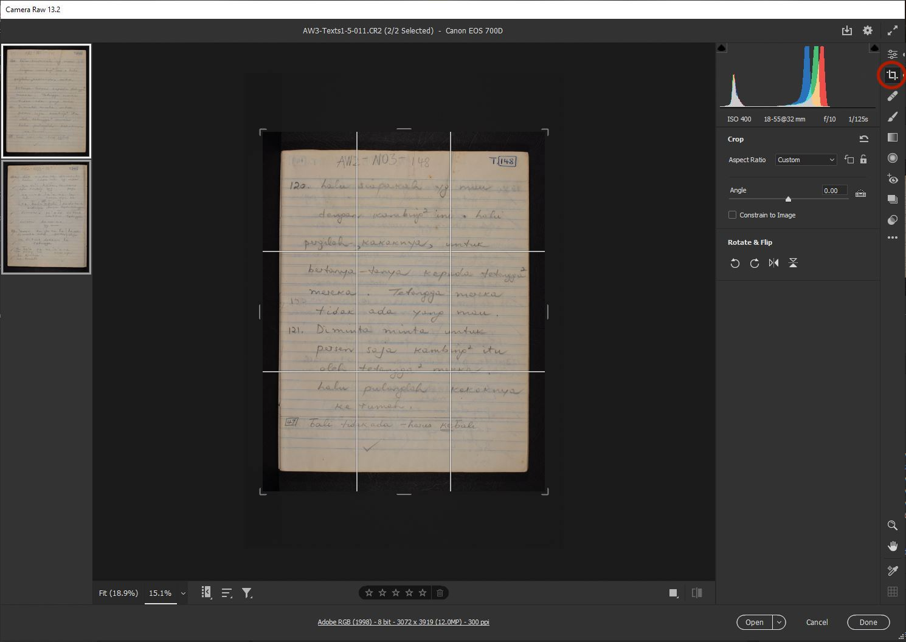
Once you are happy with your edits, you can batch export by selecting the small export icon (circled in image below), if you are wanting to export multiple files, select select all images you want to export, then press the export icon near the other editing options located in the right panel; otherwise you can export a single image by selecting the icon in the uper right corner of the image thumbnail.
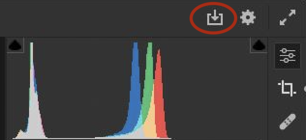
Your export settings for archiving with PARADISEC should be the following:
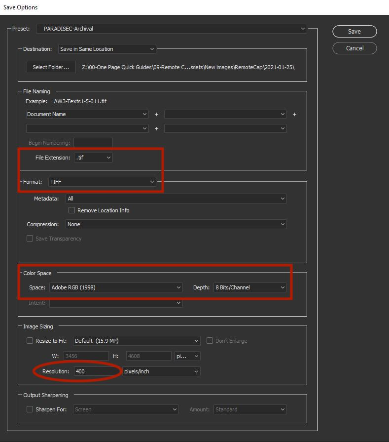
Additional resources
Butterworth, J., Pearson, A., Sutherland, P. & Farquhar, A. (2018) Remote Capture: Digitising Documentary Heritage in Challenging Locations Open Book Publishers, Open Field Guides Series, vol. I doi:10.11647/OBP.0138
⬆️ Back to top